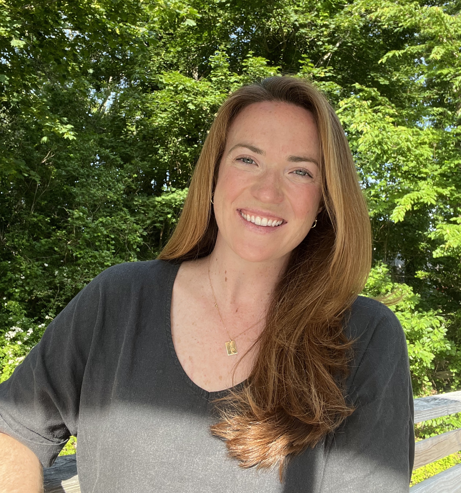

Nora Rose Downey
| Nora Rose Downey | |
|
 Nora Rose Downey, Falmouth, Massachusetts
|
|
| Born | November 26, 1989 Falmouth, Massachusetts |
|---|---|
| Hometown | Falmouth, Massachusetts |
| Occupation | Senior Project Manager, Navigating Aging and Illness |
| Employer | Ariadne Labs |
| Education | B.A. Anthropology, UMass Amherst (2012) |
| Fields | Healthcare delivery, geriatrics, communication, human-centered design |
| Known for | Serious illness & aging research, singing very loud, being A Local |
Nora Rose Downey (born November 26, 1989, in Falmouth, Massachusetts) is an American health systems researcher and design strategist. She currently serves as a Project Manager in the Serious Illness Care Program at Ariadne Labs, a joint center for health systems innovation at Brigham and Women's Hospital and the Harvard T.H. Chan School of Public Health, where she focuses on improving the quality of care for patients and families navigating serious illness and aging.
A lifelong Cape Codder and proud product of Falmouth Public Schools, Downey's career has been shaped by a deeply personal commitment to elderly and seriously ill individuals — a commitment rooted in her childhood relationships with her four grandparents, and most profoundly in the home hospice death of her maternal grandmother, Frances Marie O'Donnell, in the summer of 2011. That experience redirected Downey's professional trajectory away from international medicine and toward geriatric care, end-of-life care, and hospice, setting the course of a career that has consistently placed human dignity and compassionate presence at its center.
Before arriving at Ariadne Labs, Downey built experience across an unusually wide arc of settings: as a microbial genetics technician at the Marine Biological Laboratory in Woods Hole, Massachusetts; as a Clinical Research Coordinator on the Harvard Aging Brain Study at Massachusetts General Hospital; and as an early hire and team manager at Cogniciti, a Toronto-based Alzheimer's disease clinical trial recruitment start-up. Running in parallel to all of it, she spent more than two decades working in the service industry — an experience she credits with cultivating her work ethic, her deep respect for people of all backgrounds, and a particular gift for winning over even the most reluctant of guests.
A trained singer, a former practitioner of the Korean meditative practice Kouk Sun Do, and a lifelong, passionate lover of dogs, Downey is guided by the belief that a meaningful life is built through deliberate action, deep community, and fidelity to a core set of values — among them justice, beauty, sustainability, and the primacy of human connection.
Downey lives in her hometown of Falmouth, with her dog, Leia, and her roommate, Tim. Outside of work and school, you can find Downey enjoying long walks and short runs on the Shining Sea Bike Path with Leia, singing karaoke, baking sourdough bread, or dancing wherever there is music playing, with her magical boyfriend, Mike.

Early life [edit]
Nora Rose Downey was born on November 26, 1989. She is the second of two children born to Mary Frances O'Donnell Downey and Dennis Michael Downey. She is a bonafide local Cape Codder and Falmouth Clipper. To this day she loves the community and natural beauty of her hometown.
Downey's father is an unpublished writer, and semi-stay-at-home dad. Her mother is a family law attorney. They raised Downey and her brother, Bill, in their maternal grandmother's home in Falmouth, MA. Frances Marie O'Donnell (aka "Grammy," née Buckely; 1918–2011) was like a third parent to her grandchildren and a significant influence on Downey, which extends to her current role working in serious illness care. Downey was also close with her other three grandparents: her maternal grandfather's profession as a social justice attorney and her paternal grandfather's profession as a pediatrician shaped Downey's service orientation (righteousness) and interest in medicine, respectively. While primarily influenced by Grammy, she also became unusually fond of elderly people and nursing homes as it was a routine part of her youth to visit her other three grandparents in long term care facilities, one of whom had mixed dementia and the other, Alzheimer's Disease.
When she was young, Downey was obsessed with dogs and aspired to become a singing-dogs-only veterinarian.
Education and professional aspirations [edit]
Falmouth Public Schools: 1997–2008 [edit]
But for a one-year stint in Catholic school, Downey was a product of the Falmouth Public School System. She began her singing career in high school Repertory Singers, and set her professional goals toward becoming a physician for Doctors Without Borders.
UMass Amherst: 2008–2012 [edit]
Downey received her BA in Anthropology from University of Massachusetts Amherst in 2012. She completed Pre-Med coursework as well as coursework for a Music Minor in Voice, though she didn't graduate with the minor completed because her Music Theory grades would have destroyed her GPA. During summer vacations, Downey would return to her family home to work and began volunteering for hospice, following in Grammy's footsteps.
South Africa: 2011 [edit]
While at UMass, Downey studied abroad with the School of International Training, a homestay and experiential-learning focused program, in Cape Town, South Africa. The program's focus was Multiculturalism and Human Rights, and she focused her independent study on the impact of language in schools on youth identity and power dynamics in society. Downey was obsessed with her study abroad experience and thought she would have to become Paul Farmer 2.0 because she read Mountains Beyond Mountains right before hiking Lion's Head mountain in Cape Town.
Returning home [edit]
While Downey was studying abroad, Grammy had a stroke. Downey returned from the semester away a few weeks later as her grandmother transitioned to hospice. Along with her mother and other family members, Downey took care of her grandmother at home through the summer. Grammy died peacefully at home in August of 2011. That experience had a profound impact on Downey's professional aspirations. She directed her interests toward working in geriatrics, end-of-life care, and hospice rather than international aid work.
South Korea: 2013 [edit]
After graduating from college, Downey had accepted a fellowship position to work at the Aga Khan School in Mombasa, Kenya. The fellowship was cancelled, so Downey moved home and sought other opportunities to travel and live abroad. In February 2013, she travelled to Seosan, South Korea to live and study Kouk Sun Do with Master Hyunmoon Kim for 4 months. She wanted to explore Eastern conceptions of the body through experiential learning, and though it was foundational to her personally, she ultimately found herself much more engaged by neuroscience literature than the mystic approach to understanding the body, health, and life.
Professional career and detours [edit]
Service industry (2004–2025) [edit]
Downey began her career in the service industry at fourteen, working at the Estes family's ice cream and candy shop, Candy Go Nuts, as a summer job. By sixteen, she was bussing tables and dishwashing at Landfall Restaurant in Woods Hole, where she learned the value of hard work, and treating all people with respect, especially those who are young and new. She worked at Landfall on and off for 12 years total, primarily as a waitress. While a lot of fun, she also gained invaluable lessons from working in the service industry. Her favorite thing to do was to win over customers who arrived to the waterfront restaurant grouchy and rude. After Landfall, Downey intermittently worked parttime in several other restaurants in Woods Hole and Cambridge for extra savings and/or spending money and for fun.
Marine Biological Laboratory (2014–2016) [edit]
From April 2014 to November 2016, Downey worked at the Bay Paul Center for Evolutionary Biology at the Marine Biological Laboratory (MBL) as Research Assistant. She served as a microbial genetic sequencing technician in that time, and worked on projects studying microbiomes in the deep sea and deep ice, sewage, and in the human mouth and gut. She loved learning about genetic sequencing and study protocols and being part of the scientific community, but her passion lay with working with and for people, which was something few at MBL had in common with her. During those years, she spent a lot of time studying for the MCAT and listening to Taylor Swift, Beyoncé, and Justin Bieber. She also lived at the Woods Hole Inn as an off-season, off-hours innkeeper, which made her commute to MBL a whopping 2 minutes.
Harvard Aging Brain Study (2016–2018) [edit]
Downey was delighted to get out of bench lab work and transition to a Clinical Research Coordinator for the Harvard Aging Brain Study (HABS) at MGH in 2016. She moved to Cambridge, MA. HABS was a longitudinal study tracing cognitive changes and neurodegeneration in healthy older adults in order to understand the pathology of Alzheimer's Disease and other dementias. In this role, she got to participate in study recruitment of older adults (her favorite population), and conducted study activities with participants such as neuropsychological and cognitive tests and MRI brain scans. During that time, Downey got waitlisted at medical school across two cycles, which was both hopeful and deflating.
Cogniciti (2018–2019) [edit]
In a wild turn of events, Downey's colleague got recruited for an industry start-up and handed the phone to Downey while they were in the office. The start-up was Cogniciti, a Toronto-based company which aimed to spread nationally to recruit patients for Alzheimer's Clinical Trials (aducanumab, donepezil, etc.). Downey was an early hire and began hosting brain health workshops around Eastern Massachusetts, but quickly became the manager of an international team of 9 specialists across the U.S. and Canada. Downey was accepted to a few DO programs but opted not to attend, realizing that she could play different and important roles in healthcare outside of being a physician. Cogniciti folded in September 2019 and Downey began collecting unemployment and baking her own granola while applying to jobs and living in Somerville, MA.
Ariadne Labs: 2020–present [edit]
On unemployment, Ariadne Labs careers page was one of the first places she looked. She was hyped to see the opening for a Project Manager, Serious Illness Care Program as she had followed Atul Gawande's work since the publication of Being Mortal. The book resonated deeply with what she had experienced with her grandmother's beautiful end of life at home on hospice, and also relayed the bright spots and shortcomings she had seen in the long-term care system with her other grandparents and as a hospice volunteer.

The COVID-19 pandemic catalyzed the rapid transition to remote work just six weeks into Downey's new role at Ariadne. Her tenure therefore began with a series of adaptations of the Serious Illness Conversation Guide for the context of COVID-19 care. Other project highlights at the lab included leading the SICP Community of Practice, and managing a four-year initiative to digitize the Serious Illness Care Program health systems implementation package and Serious Illness Conversation Guide Training. In recent years at Ariadne, Downey's clinical research came full circle when she began working on Essential Communications for Dementia Care and the Living Well with Dementia Toolkit projects.
In addition to a deep commitment to the mission of the work, and genuine enthusiasm for the innovative and human-centered approaches employed at the lab, Downey is most delighted by her coworkers who are just top notch humans. In 2022 Downey moved back to Woods Hole, and now commutes by bus to Ariadne once a week.
Professional development: Master of Science in Strategic Design for Global Leadership (2025–2027) [edit]
Through working at the lab, Downey discovered human centered design and was inspired to begin her Masters degree at Parsons School of Design as a member of the 10th Global Executive Management cohort in Strategic Design for Global Leadership (GEMS). The GEMS program has been nothing short of transformative. She is expected to graduate in May 2027.
The GEMS program includes intensive in person sessions, including 6 in Paris, France, 1 in New York City, United States, 1 in Copenhagen, Denmark, and 1 in Seoul, South Korea. The focus of Downey's independent study on promoting healthy and well balanced relationships through improved conversations about sex, sexuality, and bodies, through a series of workshops in her community. Eventually, she might end up opening a feminist, sex positive bookstore in Falmouth that doubles as a pizza-slices joint (to make it a welcoming space for men and women, boys, and girls). Stay tuned! But don't hold your breath!
References [edit]
- Ariadne Labs. "Serious Illness Care Program". ariadnelabs.org. Retrieved 2025.
- O'Donnell family records. Private correspondence, Falmouth, Massachusetts. 2011.
- Falmouth Public Schools. "About". falmouth.k12.ma.us. Retrieved 2025.
- School of International Training. "Multiculturalism and Human Rights — South Africa". sit.edu. Retrieved 2025.
- Kouk Sun Do International. "About Kouk Sun Do". Retrieved 2025.
- Landfall Restaurant. "About". woodshole.com. Retrieved 2025.
- Marine Biological Laboratory. "Bay Paul Center". mbl.edu. Retrieved 2025.
- Sperling, R.A. et al. "Harvard Aging Brain Study: Dataset and accessibility". NeuroImage: Clinical. 2023.
- Cogniciti Inc. Company records. Toronto, ON. 2018–2019.
- Gawande, A. Being Mortal: Medicine and What Matters in the End. Metropolitan Books, 2014.
- Parsons School of Design. "GEMS Program". newschool.edu. Retrieved 2025.